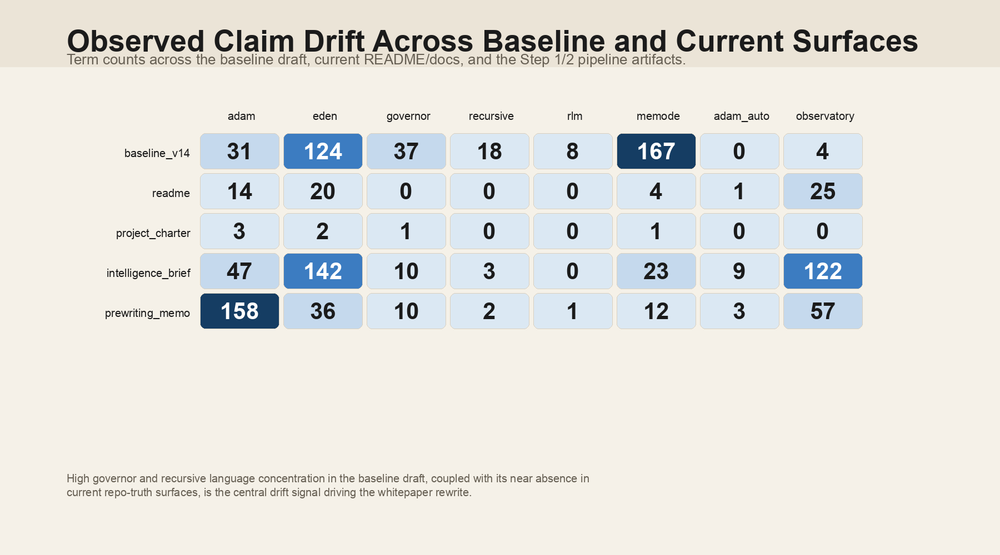

{
"sources": [
"baseline_v14",
"readme",
"project_charter",
"intelligence_brief",
"prewriting_memo"
],
"terms": [
"adam",
"eden",
"governor",
"recursive",
"rlm",
"memode",
"adam_auto",
"observatory"
],
"matrix": [
[
31,
124,
37,
18,
8,
167,
0,
4
],
[
14,
20,
0,
0,
0,
4,
1,
25
],
[
3,
2,
1,
0,
0,
1,
0,
0
],
[
47,
142,
10,
3,
0,
23,
9,
122
],
[
158,
36,
10,
2,
1,
12,
3,
57
]
]
}